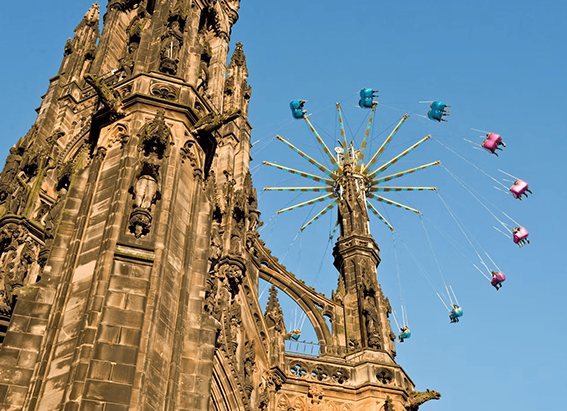

NATIONAL GEOGRAPHIC
5 flavours of Toulouse, from cassoulet to violets
TRAVEL
There’s a tangible romanticism about Toulouse. La Ville Rose (‘the pink city’), named in honour of its blush-hued buildings, is set around the Garonne river, a watery artery crisscrossed with medieval bridges, whose leafy banks provide students with summer rec rooms (the city has the second largest student population in France, after Paris). The narrow streets of its old town hum with tales of Cathar knights, while its suburbs, a hub for space and aeronautical industries, gave birth to Concorde. Then there’s the food.
Toulouse is home to nine Michelin-starred restaurants but thanks to its robust student demographic and strong Spanish influences, fine dining is far from the only option. Rich, flavourful food is accessible for all budgets from stuffed squid and oysters landed from the nearby Med to indulgent blue cheese from neighbouring Roquefort, and such colourful delicacies as pink garlic and black truffles. Here, we single out five must-tastes of Toulouse.
1. Toulouse sausage
Sign up for Jessica Hammer’s brilliant Taste of Toulouse tours and you’ll get to eat your way around the city’s best food market, Marché Victor Hugo. One of the stands to make a beeline for is Maison Garcia, a family-run charcutier that specialises in saucisse de Toulouse, the city’s famous black peppery sausage that’s sold in a large spiral and ideal for grilling or barbecuing. You can also try or buy the dried version, saucisse sèche, which is ideal for picnics or aperitifs. Elsewhere, order it for a hearty dinner at Bistroquet À La Une where it’s served with crushed potatoes and a red wine jus.
2. Cassoulet
If there’s one dish every meat lover must try when they visit this southwestern corner of France, it’s the region’s signature rich, bubbling stew. Made with Toulouse sausage, white beans, pork rind and trotter, confit duck and local garlic, cassoulet gets its name from the cassole clay pot in which it’s cooked. While this Occitanie dish is centuries old, Toulouse has only recently formed in April 2022 its own Brotherhood of the Toulouse Cassoulet, which will promote it, alongside the other two cities Carcassonne and Castelnaudary who also claim it as their signature dish. In Toulouse, come chefs add lamb to make it their own, but each has their preferred method. One of the city’s most prestigious addresses in which to try it is in the opulent dining rooms of Le Bibent on the Place du Capitole.
3. Violets
Toulouse may be known as the pink city, but its signature flavour is violet. The flowers became a popular crop in the city in the 19th century as they thrived in the winter months. While cheaper versions taste rather soapy, the best quality violet flavour lends a gentle perfume to ice cream, macarons, and patisserie such as a Paris-Toulouse, a violet-inspired riff on the Paris-Brest (a praline-cream-filled choux pastry). A fragrant port of call is La Maison de la Violette, which is set in a small boat moored on the side of the Canal du Midi in central Toulouse and offers a selection of delicious violet treats, from crystalised petals to moreish violet-shell chocolate almonds.
4. Pavé Toulousain
At Xavier, a cheese shop next to the Marché Victor Hugo, you have all the skill and talent of two masterful generations: father and son Xavier and François Bourgon. This well-stocked store brings together an astonishing array of cheeses from across France and beyond, which are matured in various ways in its own cellars. The star product is the Pavé Toulousain, a cube-shaped raw cow’s-milk cheese, which represents the pink bricks of Toulouse. It’s a rare achievement to create a cube shaped cheese as it must be methodically turned onto each of its six sides as it matures.
5. Exquisite gateaux
For a patisserie experience that feels like Breakfast at Tiffany’s, pay a visit to Sandyan, a jewel-like shop where the cakes are presented in exquisite glass display cases. The talent behind the concept is chef Yannick Delpech, who became France’s youngest ever chef to win a Michelin star in 2000 when he was 24. Since then, he’s moved away from the world of tasting menus to concentrate on his patisserie and casual-dining restaurant Des Roses et Des Ortilles. One of his signature pastries is a trompe l’oeil of a soft-boiled egg: a clever combination of cream, mango and green tea. It features on Taste of Toulouse’s Chocolate and Patisserie tour.
Comments :
- john Very good
- john Very good
Leave a Reply
Your email address will not be published. Required fields are marked*
Related posts:
-
 These 6 U.S. Christmas markets feel like a fairy tale
These 6 U.S. Christmas markets feel like a fairy taleEurope, especially Germany, is rightly famed for its Christmas markets that bring a fairy tale sense of wonder to the season. But you don’t have to journey abroad for holiday magic—these fairs in the United States
View article -
A family city guide to Edinburgh
Edinburgh is like a scene from a storybook, its spiky turrets, soaring towers, grand squares and cobbled streets every inch the sort of places dragons and princesses would inhabit not to mention
View article -
 A family city guide to Paris
A family city guide to ParisDogs in handbags, whimsical fountains, rogue Statues of Liberty and cakes like jewels. Paris mesmerises all ages with its sights, sounds and spectacles. Introducing the kids to the Mona Lisa or scampering up the Eiffel Tower
View article